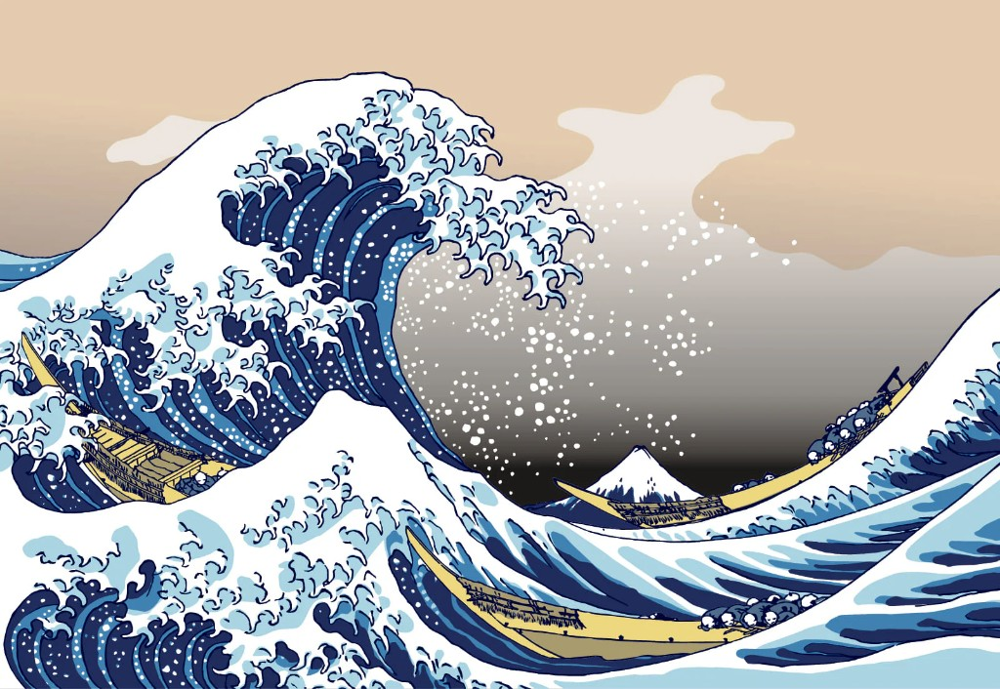

If you have ever seen a curling blue wave with a snow-capped Mount Fuji in the distance, you have met Hokusai. The Great Wave off Kanagawa (c. 1831) is one of the most reproduced images in art history — and it is a perfect fit for our nautical theme.

Who was Hokusai?
Katsushika Hokusai (1760–1849) was a Japanese ukiyo-e painter and printmaker who worked under dozens of names throughout his long career. He believed that the older he grew, the better his art would become — famously saying that nothing he made before the age of seventy was any good.
Thirty-Six Views of Mount Fuji
The Great Wave is part of a series called Thirty-Six Views of Mount Fuji. Despite the title, Fuji often appears small in the background while everyday life — fishermen, travellers, farmers — fills the foreground. Hokusai showed that grandeur lives in ordinary moments.
Why the wave still matters
Three things make this print extraordinary:
- Composition — The wave forms a dynamic claw that frames Fuji and draws the eye in a circle.
- Prussian blue — Hokusai was among the first Japanese artists to use this imported pigment, giving the print its deep, vivid colour.
- Movement — The foam tips of the wave look like claws reaching down toward the boats — you can almost hear the water.
"From the age of six I had a mania for drawing the forms of things. By the age of fifty I had published innumerable designs." — Hokusai
What beginners can learn
You do not need to copy The Great Wave to learn from it. Study how Hokusai uses large shapes first, then adds detail on top. Notice how he leaves breathing room around Fuji. Try sketching a simple wave shape in three strokes — crest, body, foam — and you are practising the same principle.
Hokusai spent a lifetime refining his craft. That is the real lesson — not the wave itself, but the persistence behind it.